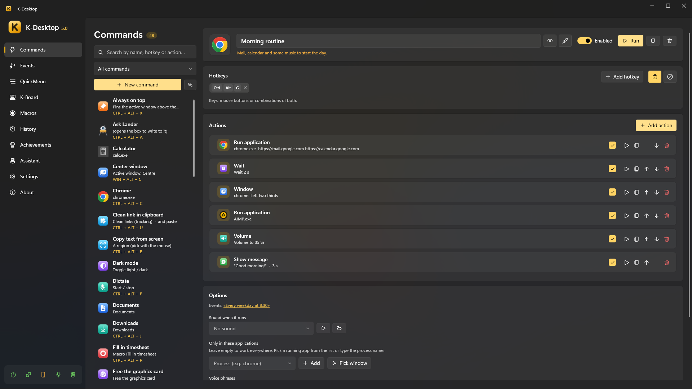

K-Desktop
Keyboard and mouse shortcuts, QuickMenus, macros, events, voice control and a phone remote for Windows, with optional desktop assistants powered by local AI.
Warning
K-Desktop 5 is still under active development. Things change from one version to the next, and the assistant module and its SDK are being finished.
| English documentation | Using K-Desktop, the assistant module, and making your own assistants |
| Documentación en español | Cómo usar K-Desktop, el módulo Asistente y cómo hacer tus propios asistentes |
| SDK API reference | Every type of the assistant SDK (in English) |
